漫画回读
逐段阅读原文，再回看对应画面。
第1段
根据陆路交通管理局昨天在网站上公布的最新数据，截至今年6月，全国地铁列车平均每行驶约140万公里，只出现一次超过五分钟的延误。第一季度地铁运行的可靠度有所提升。地铁网络系统运行稳定，得归功于一群默默付出的幕后英雄。
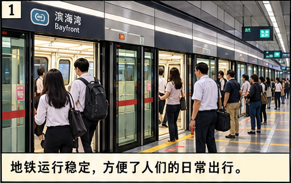
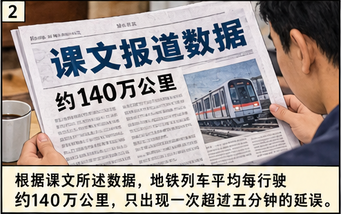
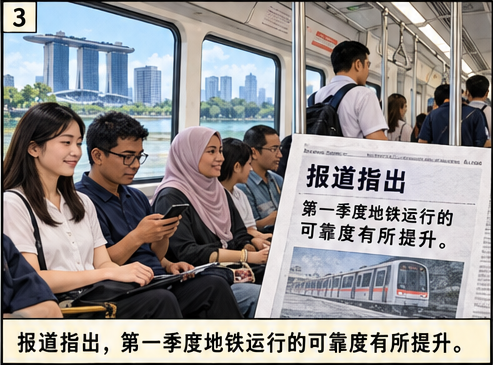
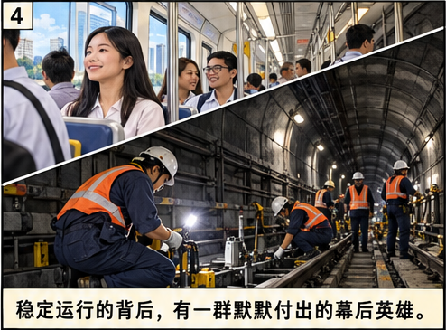
第2段
38岁的工程维修经理张少华就是这群幕后英雄中的一位。他两年前加入地铁公司时，地铁服务质量及可靠度都备受批评。为了改进地铁的服务质量，张少华将多年积累的工作经验全部贡献出来。虽然在工作中面临许多挑战，但是他明知山有虎，偏向虎山行，不怕困难，勇往直前。
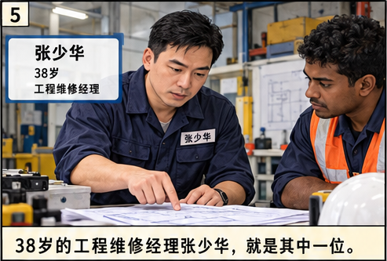
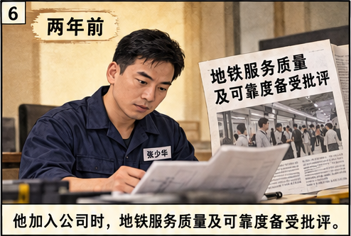
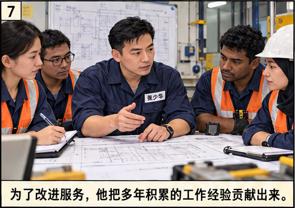
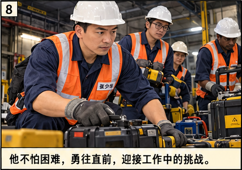
第3段
晚上10点30分是大部分人上床休息的时间，却是张少华漏夜工作的开始。11点，张少华开始与其他四个车厂的同事协调，检查并确认轨道维修机车操作正常。
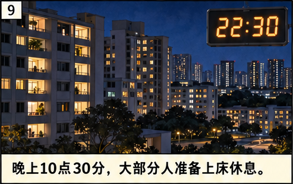
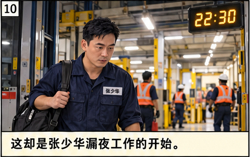
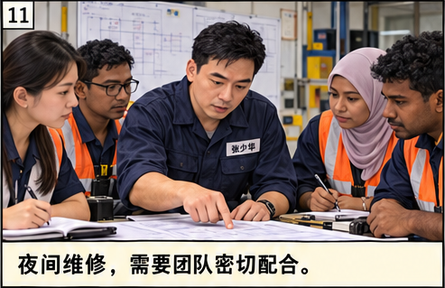
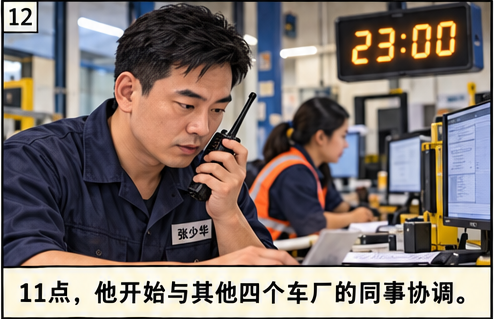
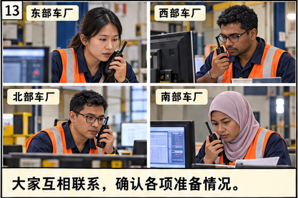
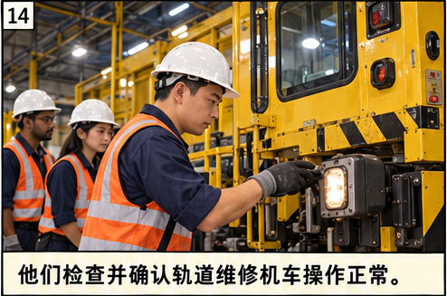
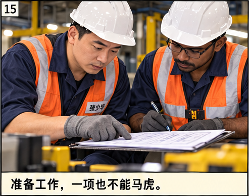
第4段
在获得指挥中心的指示后，张少华和团队成员驾驶着维修机车从地铁车厂出发到各组负责的轨道地段。凌晨1点15分，各地铁线的末班车都已收车回厂。这时，张少华和团队成员再次检查维修机车。凌晨1点30分，一切准备就绪后，维修团队准时开工。他们必须在短短的三个小时内完成多项工作，包括清洗隧道、检查电路、扫描并更换有裂痕的轨道，以确保列车行驶安全、平稳、顺畅。
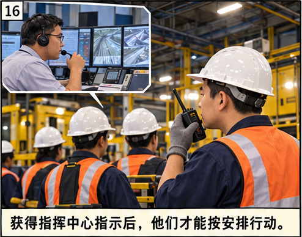
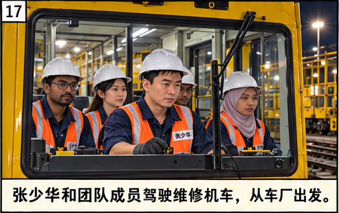
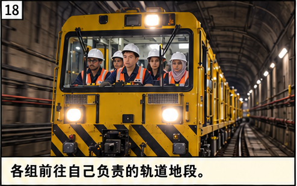
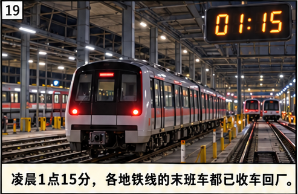
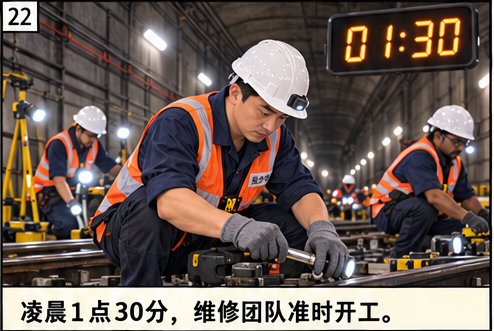
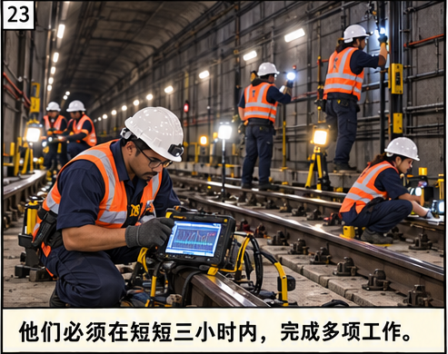
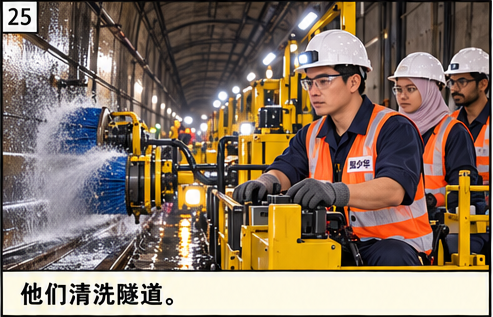
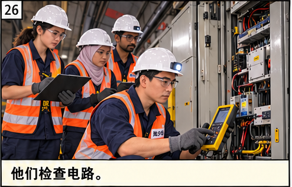
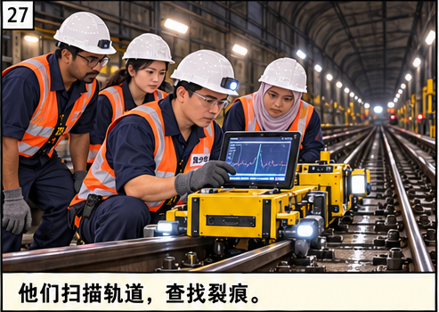
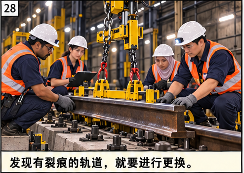
第5段
张少华说：“为了让隔天的首班列车能准时投入服务，我们每天都在和时间赛跑，好让每项工作都能准确、快速地完成。我们每天都会全力以赴，不断提高服务水平。希望假以时日，地铁的服务质量能大大改善，运行的可靠度会越来越高。这也是这份职业给我们带来的最大乐趣和成就感。”
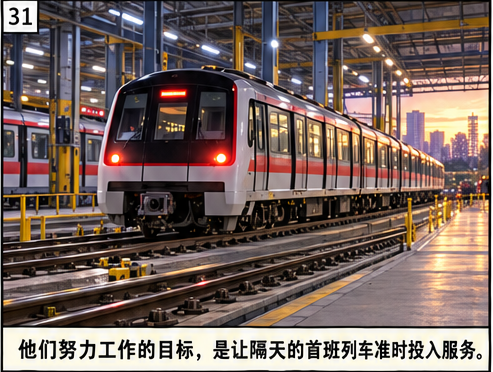
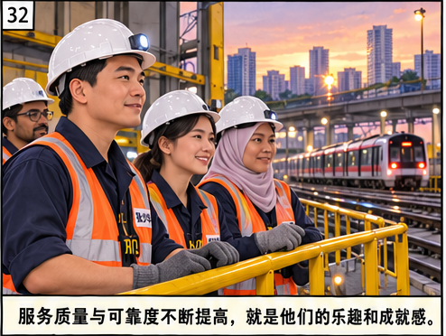
第6段
乘客李小平经常搭乘地铁上下班。以前每次地铁发生故障，他都会抱怨。在他看来，地铁正常运行是理所当然的，并不是件难事。后来，他从新闻报道中了解到，原来为了确保乘客每日出行顺畅无阻，有一群幕后英雄一直在坚守岗位，努力付出。作为乘客，他觉得这些默默无闻、无私奉献的小人物应该得到公众的理解和支持。
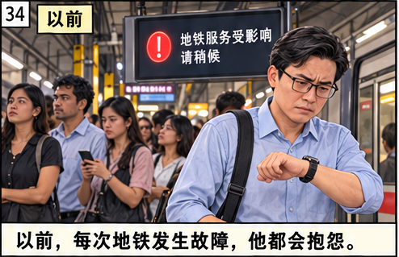
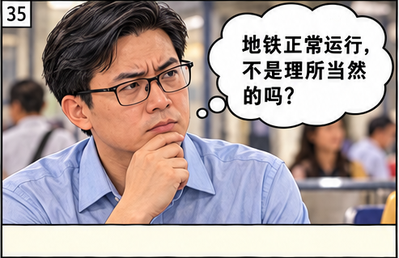
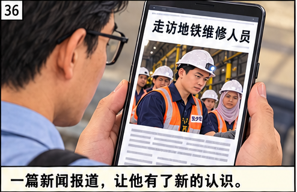
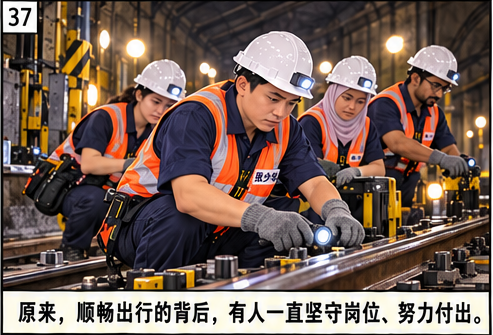
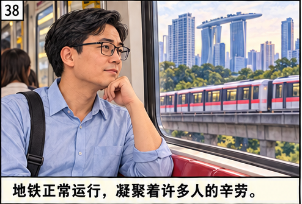
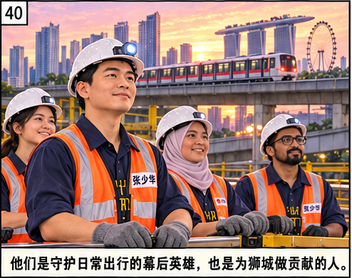
查看完整原漫画五页
第1页
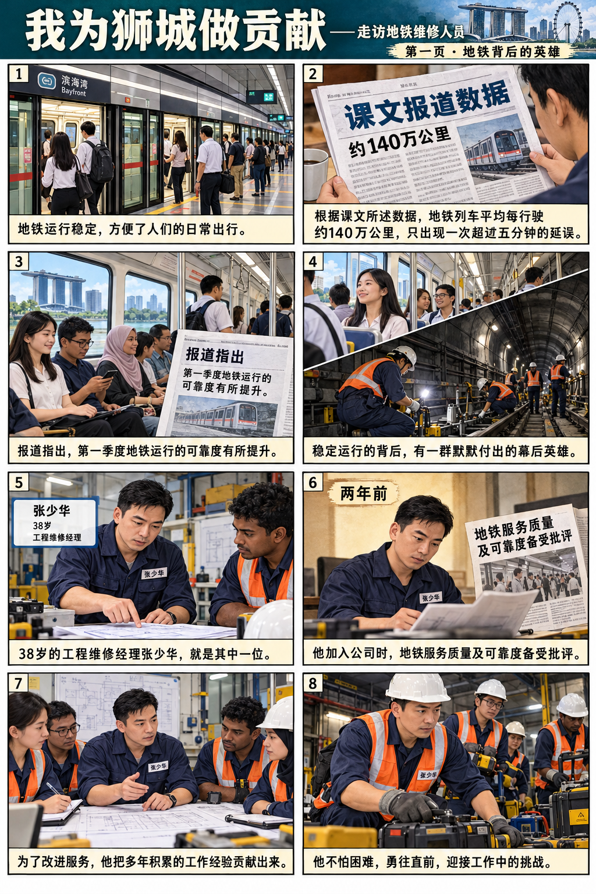
第2页
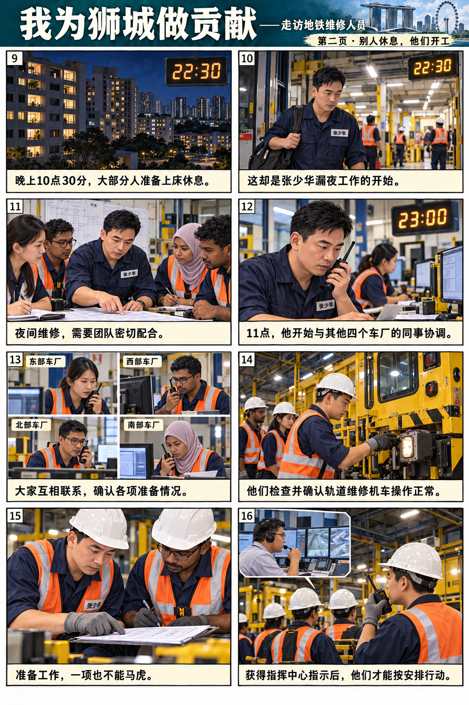
第3页
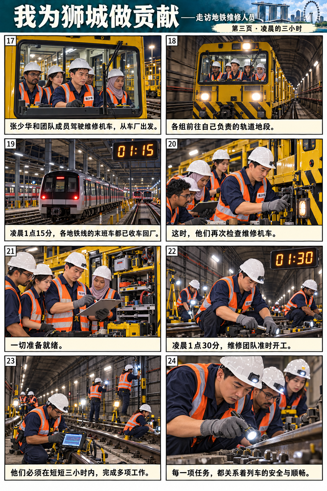
第4页
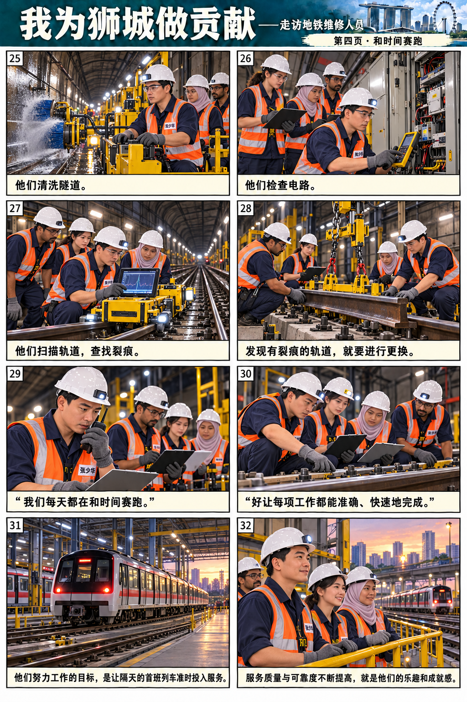
第5页
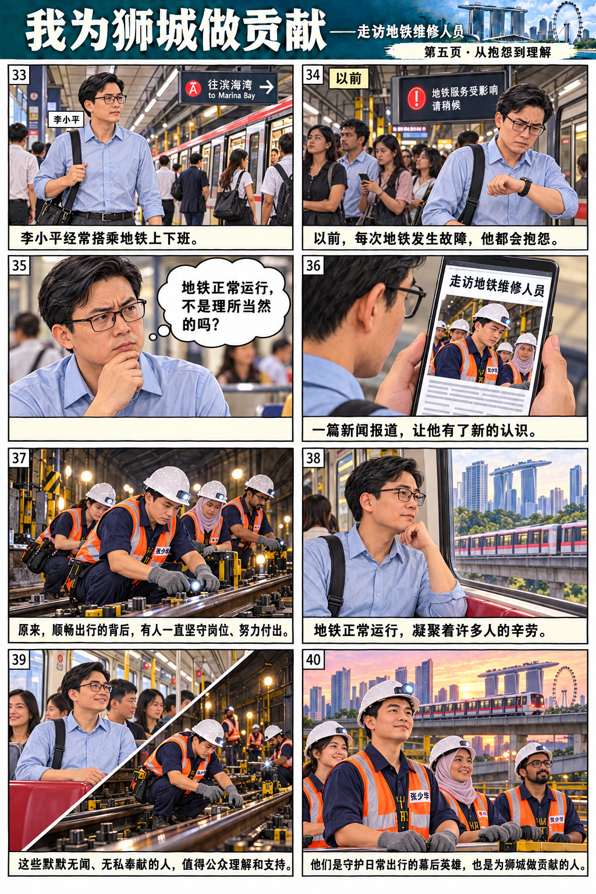